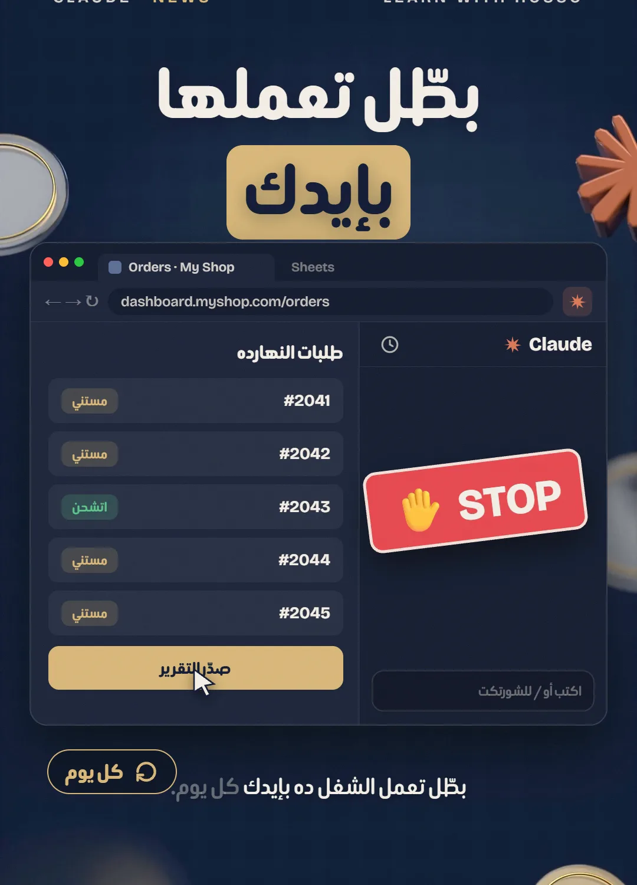
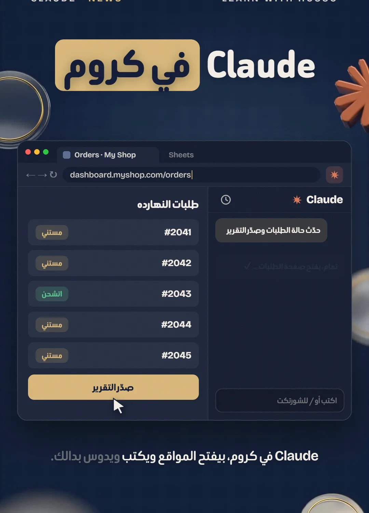
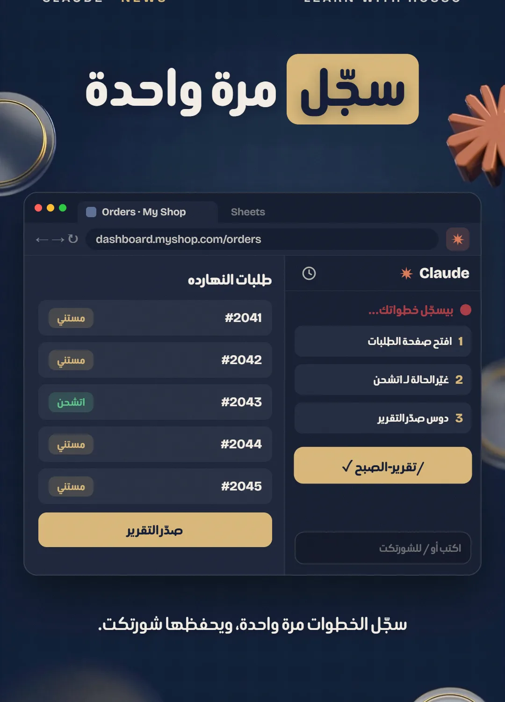
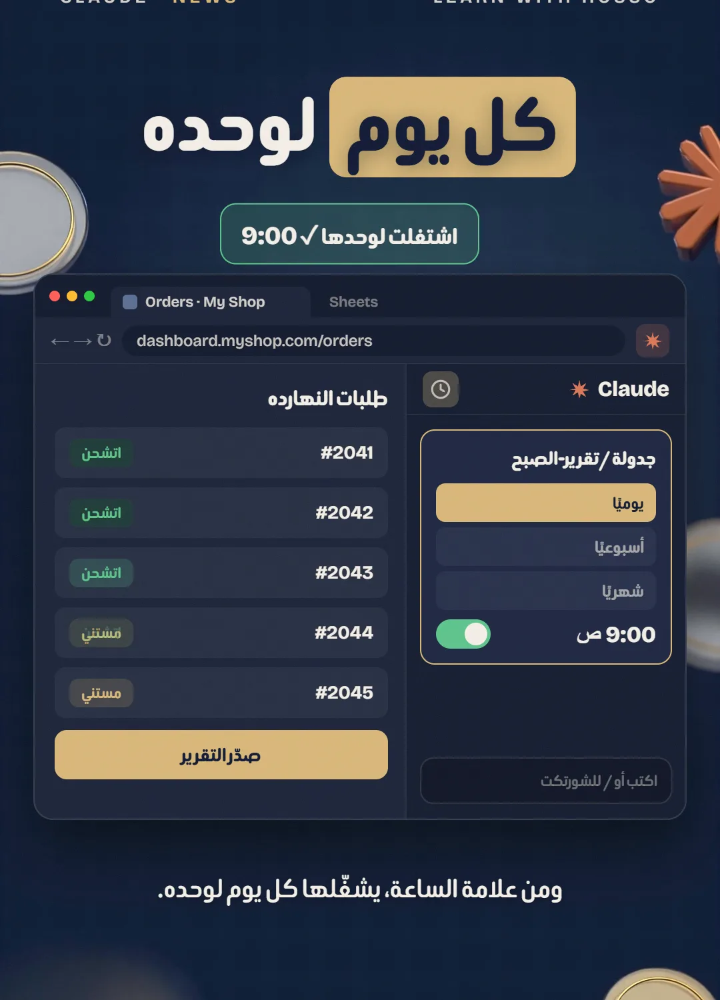
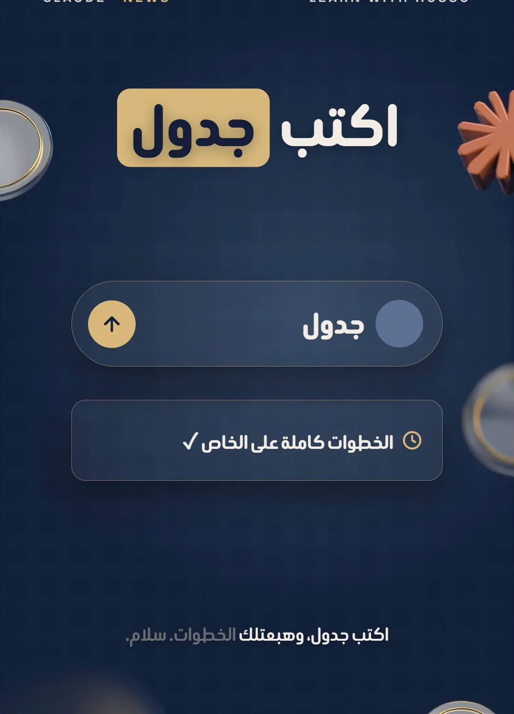

بطّل تعملهــابإيـــدك
إضافة Claude in Chrome بتفتح المواقع وتكتب وتدوس بدالك. وفيها حاجتين بيوفّروا وقت كبير: تسجّل خطوات شغلك مرة واحدة وتحفظها شورتكت، وبعدين تخلّيها تشتغل لوحدها كل يوم أو كل أسبوع في ميعاد إنت تحدده.


- 01
نزّل الإضافة
افتح جوجل كروم، وادخل Chrome Web Store ودوّر على Claude، ودوس «Add to Chrome». سجّل دخول بحساب Claude، وبعدين من علامة البازل فوق ثبّت Claude بالدبوس عشان يفضل ظاهر. الإضافة شغالة على كروم بس (مش على متصفحات تانية ولا الموبايل)، ومحتاجة باقة مدفوعة: Pro أو Max أو Team أو Enterprise.
Get started with Claude in Chrome (Anthropic) ↗
من الريل: الشغل اليومي اللي بتعمله بإيدك في المتصفح - 02
خلّيه يشتغل بدالك
دوس على أيقونة Claude فوق، هتفتحلك لوحة على جنب الصفحة. اكتبله اللي عايزه بالعربي، زي «حدّث حالة الطلبات وصدّر التقرير»، وهو يفتح الصفحات ويكتب ويدوس ويملأ الفورمز. وفي الأول خليك جنبه وراجع اللي بيعمله، خصوصًا في أي حاجة فيها فلوس أو بيانات مهمة.

من الريل: Claude في اللوحة الجانبية بيفتح الصفحة ويدوس بدالك - 03
سجّل الخطوات مرة
لو المهمة بتتكرر، دوس زرار التسجيل في اللوحة، واعمل الخطوات بنفسك مرة واحدة، وبعدين وقّف التسجيل واحفظها شورتكت. لو مش لاقي زرار التسجيل، افتح التلت نقط فوق في اللوحة واختار «Switch back to classic»، لأن التسجيل شغال في اللوحة الكلاسيك بس.

من الريل: 3 خطوات اتسجلوا واتحفظوا شورتكت - 04
شغّل الشورتكت بـ /
أي شورتكت حفظته تقدر تشغّله في أي وقت لو كتبت / في الشات واخترته. وتقدر كمان تحفظ أي برومبت اشتغل معاك كويس كشورتكت، وتعدّله أو تمسحه من إعدادات الإضافة.

من الريل: جدولة الشورتكت من علامة الساعة - 05
جدوله من علامة الساعة
دوس علامة الساعة فوق في اللوحة، واختار الشورتكت، وحدد بيتكرر إمتى: كل يوم أو كل أسبوع أو كل شهر أو كل سنة، والساعة كام. مهم: المهمة بتشتغل بس وكروم مفتوح والجهاز صاحي، لو قفلت المتصفح أو الجهاز نام هتستنى لحد ما يرجع.
How to use Claude in Chrome (Tactiq) ↗
من الريل: اكتب «جدول» وهتوصلك الخطوات - 06
أعمل إيه دلوقتي؟
ابدأ بحاجة صغيرة بتعملها كل يوم: تقرير، تحديث شيت، أو تجميع رسايل. سجّلها مرة، وجرّبها بالشورتكت كام مرة وإنت جنبه، ولما تطمن جدولها. ولو عايز حد يبنيلك سيستم أوتوماتيك كامل لبراندك، كلّمني.
الخدمات ↗
عايز حد يعملهولك؟
عندك براند ومحتاج موقع زي اللي بنعمله هنا؟ أنا أعملهولك من الأول للآخر.